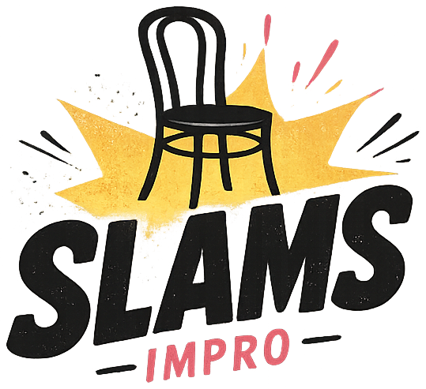

Den här sidan har improviserat sig bort
Sidan du letade efter finns inte. Men showen fortsätter — hoppa tillbaka till startsidan.
Till startsidan
Sidan du letade efter finns inte. Men showen fortsätter — hoppa tillbaka till startsidan.
Till startsidan